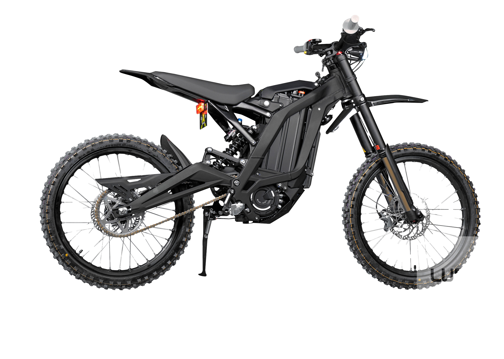
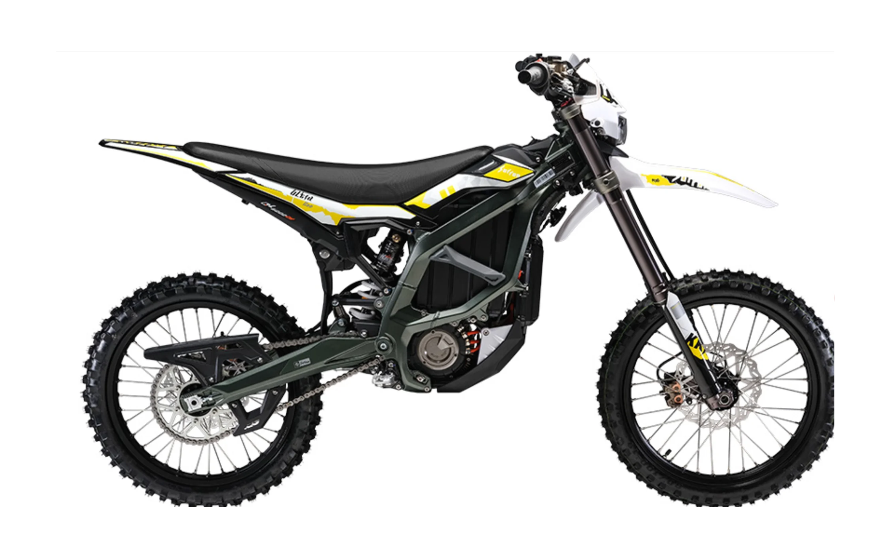
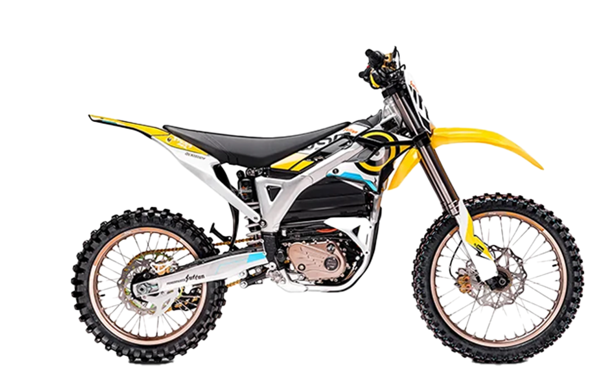

The Sur-ron X/Light Bee and its other models are basically simple and expensive electric dirt bikes. There are a total of 3 different models with optional addons available.
| Sur-ron Light Bee/ X | Sur-ron Ultra Bee | Sur-ron Storm Bee |
|---|---|---|
|  |  |  |
The speed of the Sur-ron models depends on the specific model.
| Sur-ron X | Sur-ron Ultra Bee | Sur-ron Storm Bee | |
|---|---|---|---|
| Motor | Permanent magnet synchronous motor (PMSM) Air-cooled Electric | Permanent magnet synchronous motor (PMSM) Air-cooled Electric | Liquid-cooled, brushless electric (BLDC) motor |
| Top Speed | 47 mph / 75.63 kph (on max gear) | 56 MPH / 90.12 kph (on max gear) | 75 mph / 120.70 kph (on max gear) |
| Max Range | 20 miles or 60 miles (depending on eco or sport mode) | 30 miles or 80 miles (depending on eco or sport mode) | 40 miles or 85 miles (depending on eco or sport mode) |
| Acceleration | 0-31 mph in 4.02 sec (0-49 kp/h) | 0-31 mph in 2.3 sec (0-49 kph) | 0-31 mph in 1.8 sec (0-49 kp/h) |
| Battery | 60V/32A Lithium Ion | 74V/55Ah Lithium Ion | 104V/55Ah Lithium Ion |
| Charger | 60v 10amp Li-On Charger | 110v-265V fast 15A-20A | 110v-265V fast 15A-20A (allows more energy because of battery) |
| Charging Time (0-100%) | 2.5-3.5 Hours | 4.2-5 Hours | 4 hours (less time because of charger type) |
| Controller | X Version Sine Wave | TC1000 controller | FOC Sine Wave |
| Height (Tire to Seat) | 88cm or 34.64 inches (2.88 feet) | 91cm or 35.8 inches (2.92 feet) | 94cm or 37 inches (3.08 feet) |
| Weight (Battery Included) | 47kg (103.61 lbs) | 85kg (187.23 lbs) | 127kg (280.12 lbs) |
| Peak Torque | 249.87 Nm (184 Ft-LBS) | 440 Nm (325 ft-lbs) | 520 Nm (383 ft-lbs) |
| Rated Voltage | 60V (DC) | 74V (DC) | 104V (DC) |
Honestly, it depends if you have the money for it. GO AND BUY ONE!! Not only are they quiet because they are electric, they are also somewhat reliable and totally fun to use. They were made to be used in the dirt, but you can also use them on pavement and almost any surface (excluding water, of course). Personally, if I had the money to get one, I would totally buy the Ultra Bee as it is the middle to best one from the Light Bee and Storm Bee, and I wouldn't need all the power of the Storm Bee. The choice is yours as there are three and each one is designed for different preferences. But, is it worth buying? Yes, it is.
as to what I have seen the only locations I have found near the area of oakand that are known to have are. one in sacramento and one in Los angeles. hyper rides or rocklin (sacramento) and luna cycle. (los angeles)
The reason I'm writing about this (being the Sur-ron) is because I have wanted one since three years ago, but I haven't been able to because of the price (totally affordable for a kid my age) and I have had a lot of problems collecting the money because I can't get a job due to my age. My plan was to be able to buy the Sur-ron Light Bee (as it is the cheapest one and easiest to acquire) by the end of the year, but I guess not. I really hope that by next year or before, I get to own one and not just look at other people using it.